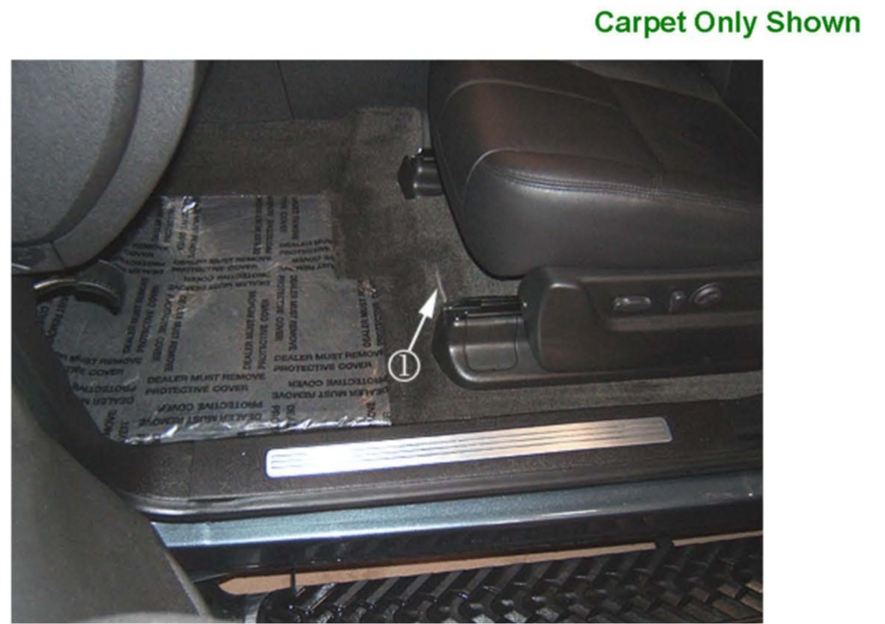
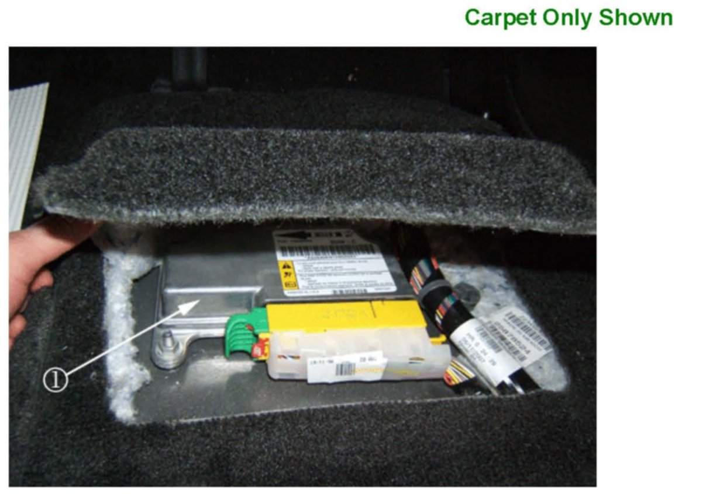
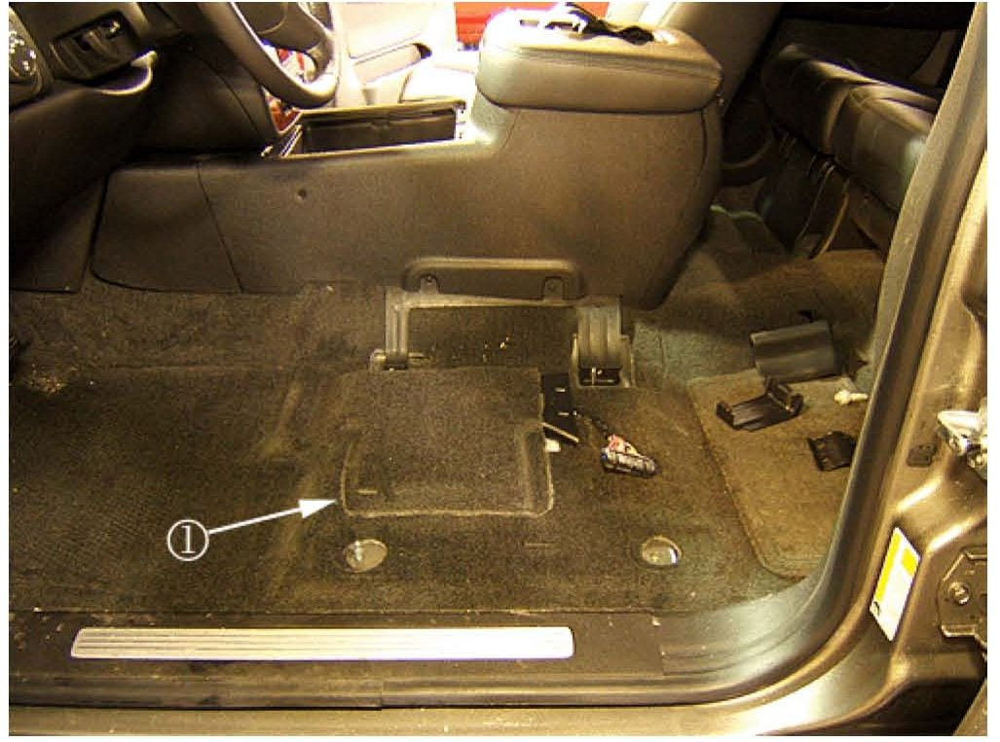

Interior - Slit/Cut in Front Carpet/Rubber Covering
Bulletin No.: 08-08-110-002Date: February 11, 2008
INFORMATION
Subject:
Information on Slit or Cut in Front Floor Carpet or Rubber Floor Covering Under Drivers Seat
Models:
2007-2008 Cadillac Escalade, Escalade ESV, Escalade EXT
2007-2008 Chevrolet Avalanche, Silverado (New Body Style), Suburban, Tahoe
2007-2008 GMC Sierra (New Body Style), Yukon, Yukon XL, Yukon Denali, Yukon Denali XL
with Carpet (RPO B30) or Rubber (RPO BG9) Floor Covering
Some customers may comment on a slit or cut in the front floor carpet or rubber floor covering under the drivers seat. This slit is an access cut for servicing the inflatable restraint sensing and diagnostic module (SDM).

The slit (1) is more noticeable when the seat track assembly is in the full rear position. DO NOT replace the front floor carpet or rubber floor covering. A service replacement carpet or mat will contain the same slit.

Please inform your customer that the slit in the carpet or rubber floor covering is normal and provides service access to the inflatable restraint sensing and diagnostic module (SDM) (1).

If the customer still expresses a concern about the slit show the customer another comparable vehicle. The new body style pickup and utility will have the same floor trim line with the access cover (1) under the left front seat. The access cover should be pulled back and pressed down for the best appearance.

Disclaimer